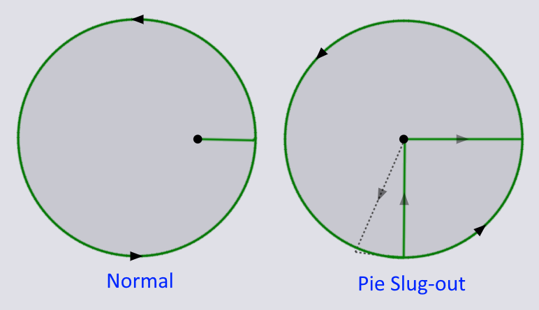
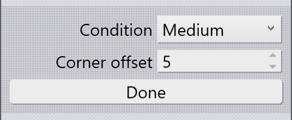

Rozšírené

V časti Advanced (Rozšírené) v okne Rezanie laserom sú nasledujúce nastavenia:
-
Use pie strategy (Použiť stratégiu koláčového rezu): Toto nastavenie sa zobrazuje iba vtedy, ak upravujeme obrábanie kruhového otvoru. Pri hrubých plechoch sa malé kruhové otvory môžu ľahko zakliesniť v plechu a nevypadnúť. Stratégia vyrezania koláčového rezu najprv vyreže z kruhu časť v tvare koláčového rezu, aby sa predišlo jeho zaseknutiu, ako je zobrazené na obrázku nižšie:
 -
Wait at center (sec) (Čakanie v strede (s)): Toto nastavenie sa používa na nastavenie času zotrvania v strede kruhu (na vypadnutie odpadu), keď sa použije stratégia koláčového rezu.
-
Acceleration (zrýchlenie) a Dynamics (dynamika): Tieto nastavenia sa používajú na ovládanie rýchlosti a zrýchlenia laseru pri rezaní geometrie. V podstate sa hľadajú kompromisy medzi rýchlosťou rezania a kvalitou rezania. Reduced (Znížená) dynamika napríklad ponúkne lepšiu kvalitu rezania ako Normal (normálna) dynamika.
| Môžete pre program nastaviť predvolenú dynamiku. |
-
Beam offset (Odsadenie lúča): Dráha rezu musí byť posunutá od požadovanej trajektórie o polovicu priemeru lúča. Toto nastavenie riadi, ako sa to dosiahne:
-
By controller (Ovládačom): Odsadenie lúča prepočíta NC riadenie na stroji na základe priemeru lúča určeného na ovládacej ploche
-
By software (Softvérom): TecZone Laser prepočíta odsadenie lúča a odosiela sa priamo do NC programu.
-
None (Žiadne): Nepoužíva sa žiadne odsadenie lúča - stred lúča leží presne na dráhe rezu.
-
Prepnutie veľkosti geometrie

Podmienky rezania len pre konkrétnu časť rezania laserom je možné zmeniť pomocou tlačidla Switch Contour Size (Prepnúť veľkosť geometrie). Kliknutím na toto tlačidlo sa okno prepne do špeciálneho režimu:
Nastavte podmienku rezania, na ktorú sa má prepnúť a odsadenie od rohu (aby ste zabezpečili presný bod uchopenia) a pohnite myšou blízko rohu, aby ste prepli na vybranú podmienku. Na obrázku nižšie je zobrazené, ako sa táto operácia prepínania použije dvakrát na odrezanie iba jedného zrazenia s podmienkou rezania Small (Malá):